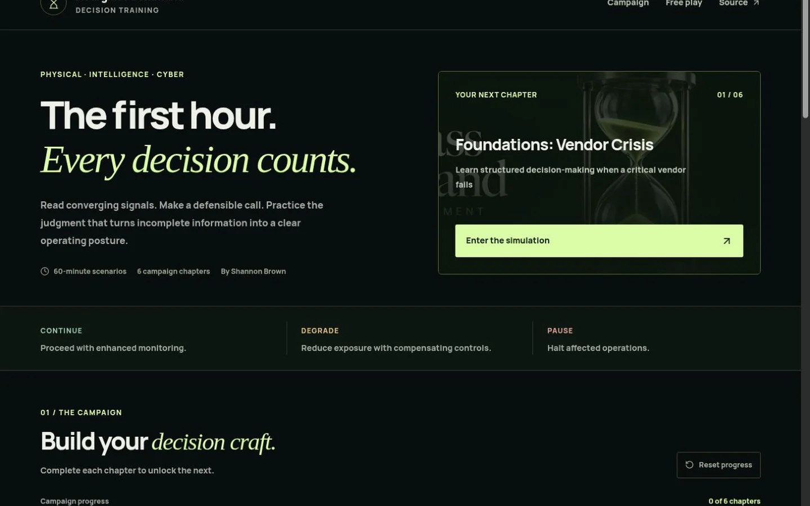

SECURITY OPERATIONS & RISK LEADERSHIP
Clear judgment.real. I lead security operations and build practical tools for making better decisions across physical, cyber, and business risk.
SB — 001 SIGNAL / DECISION
Signal to decisionDifferent perspectives. One clear course. Explore the instrument ↗ Use the arrow controls or move your pointer to change perspective.
← ↑ ↓ → Reset view
INTELLIGENCE-LED DECISIONS. BUSINESS-AWARE LEADERSHIP. Pause motion
01 / SELECTED WORK
Judgment.Made tangible. Independent work that makes the reasoning visible.

HOURGLASS COMMAND / INDEPENDENT PORTFOLIO PROJECT DECISION TRAINING / SYNTHETIC SCENARIOS
Hourglass Command Read the situation. Commit a posture. Make the reasoning inspectable. A working simulation of first-hour security decisions, with clear training boundaries.
SYNTHETIC EXAMPLE / DECISION PRACTICE
A decision brief.Before certainty. A fictional monitoring outage. Three options. Explicit ownership, residual risk, and conditions for changing the recommendation.
Inspect the decision brief ↗ 02 / PERSPECTIVE
The signal.And its implications. Public-source analysis, with assumptions and alternatives in view.
01 / PUBLIC-SOURCE ANALYSIS 6 Sep 2026
The critical question is what the business can safely continue while its picture is incomplete.
Read the analysis ↗ 02 / PUBLIC-SOURCE ANALYSIS 6 Sep 2026
Useful uncertainty tells a decision-maker what can be done now—and what evidence would change the call.
Read the analysis ↗ 03 / HOW I LEAD PROFESSIONAL EXPERIENCE
Good judgmentteam capability. A clear decision depends on the people, standards, and handoffs around it.
01 Coach the people closest to the signal. I coach supervisors and analysts, using quality review to strengthen triage, reporting, and the judgment behind an escalation.
02 Make the handoff reliable. Operating standards make facts, ownership, open questions, and the next action visible across shifts and stakeholders.
03 Keep the business in the picture. Security advice has to connect the threat to the activity being protected—and make the tradeoffs clear to the people who own the risk.
04 / EXPERIENCE
Operational focus.A broader foundation. 2025–PRESENT
GSOC Manager Allied Universal · Fortune 500 pharmaceutical client
Manager since November 2025. Analyst and Supervisor roles earlier in 2025.
Operating scope ↗ EARLIER EXPERIENCE
Commercial risk & international leadership Investment analysis, supplier negotiation, regulated financial services, and commercial operations.
Full chronology ↗